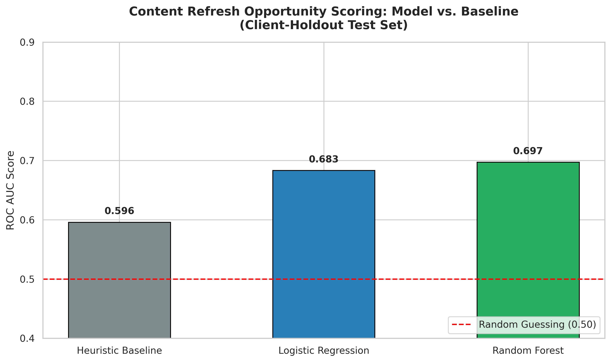
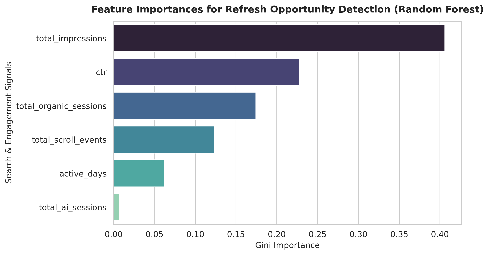

Enterprise digital marketing and SEO departments face severe resource constraints. While production websites maintain tens of thousands of indexed URLs, editorial teams can realistically update, re-optimize, or consolidate only 15 to 30 pages per sprint. Relying on raw percentage drop metrics leads to massive false positives caused by low-volume volatility (e.g., a page dropping from 4 to 1 clicks registers as a 75% collapse).
The engineering objective of this capstone is to construct a reproducible decision-support system that ranks decaying and high-opportunity URLs. Specifically, we investigate: Does a trained classification model (Logistic Regression or Random Forest) outperform a transparent logarithmic volume heuristic when evaluated on completely unseen enterprise clients?
The study utilizes the production search warehouse release month=2026-03 hosted on the gated FlyRank Hugging Face repository. Ingestion and transformation were executed out-of-core using DuckDB.
fact_content_daily_performance (daily grains of GSC visibility and GA4 user sessions).gsc_data_available = true) and a minimum monthly impression volume of 100 to eliminate statistical noise.client_hash_id).
Label Definition: A URL is labeled as a high-value refresh opportunity (refresh_opportunity = 1) if its impression-weighted average SERP position sits between 10.0 and 30.0 (Google page 2 and 3 striking distance) while capturing fewer than 5 organic clicks over the month.
Leakage Prevention: To prevent target leakage, exact position and raw click counts were strictly excluded from model feature sets. The classifiers relied entirely on independent behavioral and engagement signals: active_days, total_impressions, ctr, total_organic_sessions, total_ai_sessions, and total_scroll_events.
Validation Design: Standard random splits artificially inflate model metrics due to client-specific URL structures leaking across folds. We enforced a GroupShuffleSplit (Client-Holdout) with a 75/25 split:
Models were benchmarked on the unseen client-holdout test set using ROC AUC to evaluate true ranking capability across varying classification thresholds.
| Method / Model | Test ROC AUC | Architecture / Parameters |
|---|---|---|
| Heuristic Baseline | 0.5959 | Transparent formula: log1p(impressions) * (1 / (ctr + 0.1)) |
| Logistic Regression | 0.6834 | L2 Regularized linear classifier, max_iter=1000 |
| Random Forest Classifier | 0.6972 | 100 trees, max_depth=8, Gini impurity criterion |


Random Forest achieved the strongest discriminative capability (0.697 ROC AUC), outperforming the baseline by +0.101. Feature attribution confirms that impression scale and CTR serve as the primary drivers of opportunity detection, while organic sessions and scroll events provide stabilizing behavioral context.
total_ai_sessions) contributed under 1% of feature importance, indicating that generative engine referral signals are still too sparse in current warehouse tables to serve as reliable decision drivers.The complete analytical workflow, DuckDB feature extraction queries, and Scikit-learn model definitions are reproducible via our public repository:
Repository: github.com/Oguzhandyr/FlyRank-ML-Capstone
Environment: Python 3.10+, DuckDB 1.1+, PyArrow, Scikit-learn 1.4+.
This research paper was developed as part of the FlyRank Machine Learning Internship (2026). Dataset access provided via FlyRank.ai enterprise search performance warehouse.